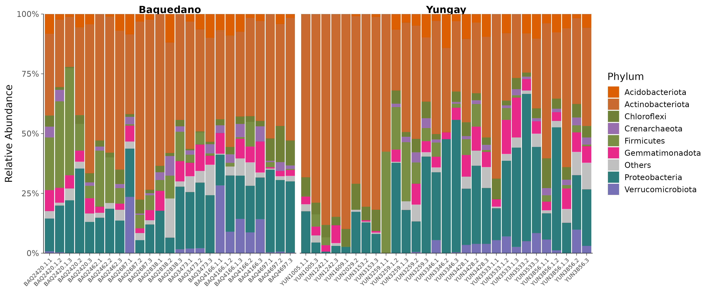
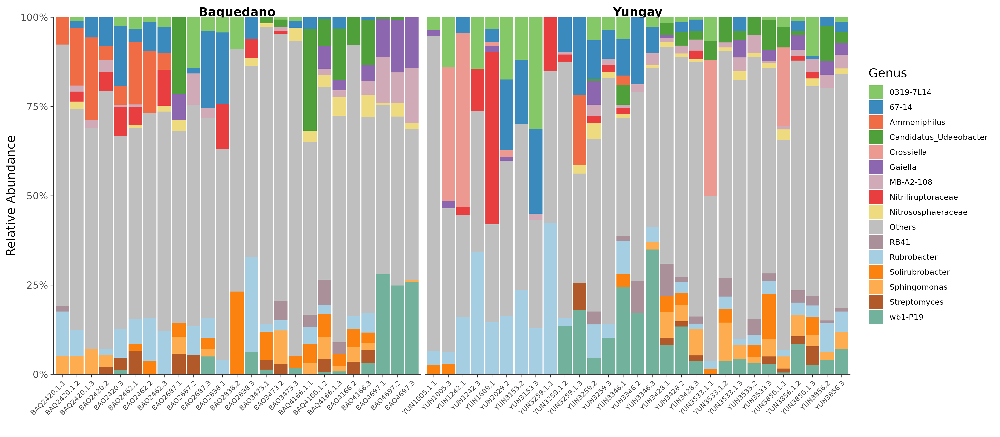
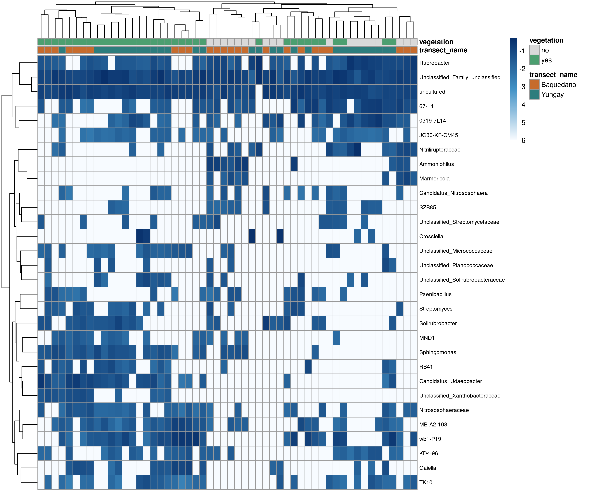
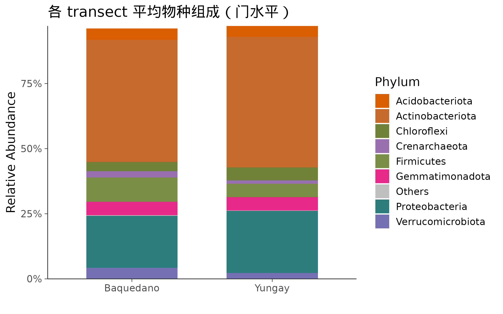

16S 微生物组最佳实践系列（六）：物种组成可视化——谁占了多少
📋 教程信息 - GitHub：petemeng/16S-Tutorial（完整代码与环境文件） - 数据来源：Atacama soils 双端数据集（54 个样本，1,078 个过滤后 ASV） - 预计阅读：30 分钟 | 实操：20 分钟 - 难度：⭐⭐（5 星制） - 前置知识：完成本系列第 4-5 篇，
results/下已有table-filtered.qza、taxonomy.qza、系统发育树和phyloseq_object.rds
本篇目标
上一篇的 PCoA 已经说明：Baquedano 和 Yungay 两条 transect 的群落结构并不一样。但 PCoA 只告诉你“整体不同”，不会直接告诉你“到底是谁多了、谁少了”。
这篇我们把抽象的距离关系落到具体类群上：哪些门占主导、哪些属在不同 transect 更常见、哪些样本之间的组成模式最相似。
读完这一篇，你会：
- 把 Atacama 的 QIIME2 结果读入 R，构建
phyloseq对象 - 画出门水平和属水平的堆叠柱状图
- 画出 top genus 热图，看样本之间的聚类关系
- 理解相对丰度图的解读边界
- 把后续所有 R 分析都统一到同一个对象上
从这一篇开始，16S 系列的主战场从 QIIME2 命令行切到 R。
从 QIIME2 到 R：构建 phyloseq 对象
这套 Atacama 教程没有直接用 qiime2R::qza_to_phyloseq()，而是把导出的 BIOM、taxonomy 和 tree 统一封装到了一个辅助脚本里。这样后续章节都能复用同一个入口。
# ============================================================
# 文件：analysis/06_composition_visualization.R
# 功能：Atacama 物种组成可视化（堆叠柱状图、热图）
# ============================================================
source("/media/desk16/tly9658/16s-atacama-tutorial/analysis/common_16s.R")
suppressPackageStartupMessages({
library(file2meco)
library(pheatmap)
library(RColorBrewer)
library(scales)
})
ensure_dir(file.path(ATACAMA_ROOT, "results", "figures"))
ps <- load_atacama_phyloseq(filtered = TRUE)
cat("phyloseq 对象摘要：\n")
ps
📊 输出：
phyloseq 对象摘要：
phyloseq-class experiment-level object
otu_table() [ 1078 taxa and 54 samples ]
sample_data() [ 54 samples by 23 sample variables ]
tax_table() [ 1078 taxa by 7 taxonomic ranks ]
phy_tree() [ 1078 tips and 1075 internal nodes ]
这就是后面所有 R 分析的基础对象。ASV 表、分类学、样本元数据和系统发育树都已经装进去了。
在 Atacama 这套数据里，样本变量不再是 body site，而是 transect_name、site_name、depth、ph、toc、ec、vegetation 等环境信息。所以下游图表也会围绕这些环境梯度展开。
门水平堆叠柱状图
先看最常见的门水平组成图。这里我们按 transect 分面，保留全体样本平均丰度最高的 8 个门，其余合并成 Others。
# ============================================================
# Step 1: 门水平堆叠柱状图
# ============================================================
sample_order <- sample_data(ps) %>%
data.frame(check.names = FALSE) %>%
rownames_to_column("Sample") %>%
arrange(transect_name, site_name, vegetation, Sample) %>%
pull(Sample)
sample_data(ps)$SampleOrdered <- factor(sample_names(ps), levels = sample_order)
ps_phylum <- tax_glom(ps, taxrank = "Phylum", NArm = FALSE)
ps_phylum_rel <- transform_sample_counts(ps_phylum, function(x) x / sum(x))
phylum_df <- psmelt(ps_phylum_rel) %>%
mutate(
Phylum = ifelse(is.na(Phylum) | Phylum == "", "Unclassified", as.character(Phylum)),
SampleOrdered = factor(Sample, levels = sample_order)
)
top_phyla <- phylum_df %>%
group_by(Phylum) %>%
summarize(mean_abund = mean(Abundance), .groups = "drop") %>%
arrange(desc(mean_abund)) %>%
slice_head(n = 8) %>%
pull(Phylum)
phylum_df <- phylum_df %>%
mutate(Phylum_plot = ifelse(Phylum %in% top_phyla, Phylum, "Others"))
cat("Top 8 门（按平均相对丰度）：\n")
phylum_df %>%
group_by(Phylum_plot) %>%
summarize(mean_pct = round(mean(Abundance) * 100, 2), .groups = "drop") %>%
arrange(desc(mean_pct)) %>%
print(n = 9)
📊 输出：
Top 8 门（按平均相对丰度）：
Phylum_plot mean_pct
1 Actinobacteriota 48.55
2 Proteobacteria 22.07
3 Firmicutes 7.00
4 Gemmatimonadota 5.14
5 Chloroflexi 4.38
6 Acidobacteriota 4.25
7 Verrucomicrobiota 3.20
8 Crenarchaeota 1.86
9 Others 0.21
phylum_palette_base <- c(
"Actinobacteriota" = "#C66B2D",
"Proteobacteria" = "#2D7D7D",
"Firmicutes" = "#7A8F45",
"Gemmatimonadota" = "#E7298A",
"Chloroflexi" = "#708238",
"Acidobacteriota" = "#D95F02",
"Verrucomicrobiota" = "#7570B3",
"Crenarchaeota" = "#9A6FB0"
)
phylum_colors <- c(phylum_palette_base[top_phyla], "Others" = "grey75")
p_phylum <- ggplot(
phylum_df,
aes(x = SampleOrdered, y = Abundance, fill = Phylum_plot)
) +
geom_col(width = 0.92) +
facet_grid(~ transect_name, scales = "free_x", space = "free_x") +
scale_fill_manual(values = phylum_colors) +
scale_y_continuous(labels = percent_format(accuracy = 1), expand = c(0, 0)) +
labs(x = "", y = "Relative Abundance", fill = "Phylum") +
theme_songlab() +
theme(
axis.text.x = element_text(angle = 45, hjust = 1, size = 8),
legend.position = "right",
panel.spacing = unit(0.35, "lines")
)
save_plot_dual(p_phylum, "ch06_phylum_barplot", width = 14, height = 6)

图 1：门水平物种组成堆叠柱状图。 左侧是 Baquedano，右侧是 Yungay。两条 transect 都以 Actinobacteriota 为主，但 Proteobacteria、Chloroflexi、Acidobacteriota 和 Gemmatimonadota 的相对比例在不同站点并不完全一致。
从这张图先读出三个事实：
第一，Atacama 不是“少数几个门极端统治”的简单系统。 虽然 Actinobacteriota 接近一半，但后面还有一串环境土壤里常见的门共同贡献剩余丰度。
第二，组内也有差异。 同一条 transect 内部，不同 site 和 vegetation 状态仍然会带来样本间波动，所以后面差异分析不能只靠肉眼看柱状图。
第三，相对丰度图只能描述比例，不是绝对量。 某个门比例上升，可能是它自己多了，也可能是别的门少了。
属水平堆叠柱状图
门水平给的是大轮廓，真正适合做 biomarker 和环境解读的往往是属水平。
# ============================================================
# Step 2: 属水平堆叠柱状图
# ============================================================
ps_genus <- tax_glom(ps, taxrank = "Genus", NArm = FALSE)
ps_genus_rel <- transform_sample_counts(ps_genus, function(x) x / sum(x))
genus_df <- psmelt(ps_genus_rel) %>%
mutate(
Family = ifelse(is.na(Family) | Family == "", "Family_unclassified", as.character(Family)),
Genus = ifelse(is.na(Genus) | Genus == "", paste0("Unclassified_", Family), as.character(Genus)),
SampleOrdered = factor(Sample, levels = sample_order)
)
top_genera <- genus_df %>%
group_by(Genus) %>%
summarize(mean_abund = mean(Abundance), .groups = "drop") %>%
arrange(desc(mean_abund)) %>%
slice_head(n = 15) %>%
pull(Genus)
genus_df <- genus_df %>%
mutate(Genus_plot = ifelse(Genus %in% top_genera, Genus, "Others"))
genus_df %>%
group_by(Genus_plot) %>%
summarize(mean_pct = round(mean(Abundance) * 100, 2), .groups = "drop") %>%
arrange(desc(mean_pct)) %>%
print(n = 16)
📊 输出：
Genus_plot mean_pct
1 Rubrobacter 6.72
2 67-14 5.29
3 wb1-P19 5.27
4 0319-7L14 3.42
5 Candidatus_Udaeobacter 2.98
6 Crossiella 2.77
7 Nitriliruptoraceae 2.60
8 Ammoniphilus 2.18
9 Sphingomonas 2.16
10 Solirubrobacter 2.11
11 MB-A2-108 2.06
12 Gaiella 1.73
13 RB41 1.24
14 Nitrososphaeraceae 1.20
15 Streptomyces 1.16
16 Others 0.24
genus_colors <- c(colorRampPalette(brewer.pal(12, "Paired"))(15), "grey75")
names(genus_colors) <- c(top_genera, "Others")
p_genus <- ggplot(
genus_df,
aes(x = SampleOrdered, y = Abundance, fill = Genus_plot)
) +
geom_col(width = 0.92) +
facet_grid(~ transect_name, scales = "free_x", space = "free_x") +
scale_fill_manual(values = genus_colors) +
scale_y_continuous(labels = percent_format(accuracy = 1), expand = c(0, 0)) +
labs(x = "", y = "Relative Abundance", fill = "Genus") +
theme_songlab() +
theme(
axis.text.x = element_text(angle = 45, hjust = 1, size = 8),
legend.position = "right",
legend.text = element_text(size = 9),
panel.spacing = unit(0.35, "lines")
)
save_plot_dual(p_genus, "ch06_genus_barplot", width = 16, height = 7)

图 2：属水平物种组成堆叠柱状图。 这套 desert-soil 数据的 dominant genera 并不是人类肠道里常见的那批名字，而是 Rubrobacter、0319-7L14、wb1-P19、Candidatus_Udaeobacter、Crossiella 等更典型的极端环境/土壤类群。
这张图最有价值的地方在于：你能看到哪些属几乎遍布两条 transect，哪些属只在某些 site 明显抬高。比如 Rubrobacter 和 67-14 在这套数据里都很突出，而 Crossiella、0319-7L14、wb1-P19 等会在后面的差异分析和随机森林里再次出现。
Top genus 热图
堆叠柱状图更适合看组成比例；热图更适合看“样本和样本是否成簇”“某一批 genus 是否一起升高”。
# ============================================================
# Step 3: Top 30 genus 热图
# ============================================================
top30 <- genus_df %>%
group_by(Genus) %>%
summarize(mean_abund = mean(Abundance), .groups = "drop") %>%
arrange(desc(mean_abund)) %>%
slice_head(n = 30) %>%
pull(Genus)
heatmap_df <- genus_df %>%
filter(Genus %in% top30) %>%
group_by(Genus, Sample) %>%
summarize(Abundance = sum(Abundance), .groups = "drop") %>%
pivot_wider(
names_from = Sample,
values_from = Abundance,
values_fill = list(Abundance = 0)
)
heat_mat <- as.matrix(heatmap_df[, -1])
rownames(heat_mat) <- heatmap_df$Genus
heat_mat <- heat_mat[, sample_order, drop = FALSE]
heat_mat_log <- log10(heat_mat + 1e-6)
sample_meta <- sample_data(ps) %>%
data.frame(check.names = FALSE) %>%
rownames_to_column("Sample") %>%
select(Sample, transect_name, vegetation, site_name) %>%
filter(Sample %in% colnames(heat_mat_log)) %>%
arrange(match(Sample, colnames(heat_mat_log)))
ann_col <- sample_meta %>%
column_to_rownames("Sample")
ann_colors <- list(
transect_name = c("Baquedano" = "#C66B2D", "Yungay" = "#2D7D7D"),
vegetation = c("no" = "#D9D9D9", "yes" = "#4C9F70")
)
pheatmap(
heat_mat_log,
annotation_col = ann_col[, c("transect_name", "vegetation"), drop = FALSE],
annotation_colors = ann_colors,
color = colorRampPalette(c("#F7FBFF", "#4292C6", "#08306B"))(100),
cluster_rows = TRUE,
cluster_cols = TRUE,
show_colnames = FALSE,
fontsize_row = 8,
filename = file.path(ATACAMA_ROOT, "results", "figures", "ch06_genus_heatmap.png"),
width = 12,
height = 10
)

图 3：Top 30 genus 热图。 顶部注释同时标出了 transect_name 和 vegetation。这里最值得看的不是某一个格子，而是整列样本的聚类关系：不少样本会优先按 transect 聚在一起，但 vegetation 也在局部形成了次级结构。
这正是后面要继续做 LEfSe、ANCOM-BC 和随机森林的原因。光靠肉眼，你能感到模式存在，但很难说清楚“到底哪个 genus 是稳定差异，哪个只是局部波动”。
用 microeco 做分组平均图
phyloseq 足够强，但 microeco 在微生物组特化可视化上更省事。这里我们直接做一个 transect 平均组成图。
# ============================================================
# Step 4: microeco 分组平均图
# ============================================================
meco <- file2meco::phyloseq2meco(ps)
meco$cal_abund()
cat("microeco 对象创建完成\n")
cat("样本数:", nrow(meco$sample_table), "\n")
cat("ASV 数:", nrow(meco$otu_table), "\n")
t1 <- microeco::trans_abund$new(
dataset = meco,
taxrank = "Phylum",
ntaxa = 8,
groupmean = "transect_name"
)
p_meco <- t1$plot_bar(
others_color = "grey75",
facet = NULL,
xtext_keep = TRUE,
legend_text_italic = FALSE
) +
theme_songlab() +
labs(title = "各 transect 平均物种组成（门水平）")
save_plot_dual(p_meco, "ch06_phylum_groupmean", width = 8, height = 5)
📊 输出：
microeco 对象创建完成
样本数: 54
ASV 数: 1078

图 4：按 transect 取平均后的门水平组成。 这张图把个体样本波动压平之后，更容易看出整体差异：两条 transect 都由 Actinobacteriota 主导，但 Baquedano 与 Yungay 在 Proteobacteria、Chloroflexi、Gemmatimonadota 这些门上的平均比例并不完全相同。
如果你准备写论文，图 1/2 更适合展示个体异质性，图 4 更适合在正文里讲“组间总体差异”。
保存对象，给后续章节复用
# ============================================================
# Step 5: 保存 phyloseq 对象
# ============================================================
saveRDS(ps, file.path(ATACAMA_ROOT, "results", "phyloseq_object.rds"))
cat("已保存：results/phyloseq_object.rds\n")
本篇小结
这一篇我们把 Atacama 的上游 QIIME2 产物完整转进了 R，并画出了 4 类最常用的组成图。
核心收获有两个：
第一，Atacama 的组成差异是真实存在的，但不是那种“一眼分组”的夸张模式。 这更接近真实环境样本，也更需要后面的统计分析和机器学习来拆解。
第二，相对丰度图只能回答“谁占比例更高”，不能直接回答“谁的绝对量更多”。 这是后面做差异丰度分析时必须一直记着的前提。
下一篇预告
组成图回答了“谁在这里”。下一步要回答的是：哪些 genus 在 Baquedano 和 Yungay 之间真的发生了统计学显著变化？
下一篇我们进入差异丰度分析，用 LEfSe 和 ANCOM-BC 两种思路交叉验证，看看哪些类群最稳定地区分这两条 transect。
📌 本篇代码和图都来自服务器实际运行结果，可在 GitHub 仓库复现。
本系列导航
| 篇目 | 主题 | 状态 |
|---|---|---|
| 第 1 篇 | 只测一个基因，怎么就能知道有哪些细菌 | ✅ 已发布 |
| 第 2 篇 | 搭建环境，拿到数据 | ✅ 已发布 |
| 第 3 篇 | DADA2 去噪——从噪声中找到真实序列 | ✅ 已发布 |
| 第 4 篇 | 物种注释——给每个 ASV 一个名字 | ✅ 已发布 |
| 第 5 篇 | 多样性分析——有多“丰富”，彼此有多“不同” | ✅ 已发布 |
| 第 6 篇 | 物种组成可视化——谁占了多少 | 📍 本篇 |
| 第 7 篇 | 差异物种分析：LEfSe + ANCOM-BC | ✅ 已发布 |
| 第 8 篇 | PICRUSt2 功能预测 | ✅ 已发布 |
| 第 9 篇 | 共现网络分析 | ✅ 已发布 |
| 第 10 篇 | 随机森林 biomarker 筛选 | ✅ 已发布 |
| 第 11 篇 | SourceTracker 溯源分析 | ✅ 已发布 |
| 第 12 篇 | 微生物组-代谢组联合分析 | ✅ 已发布 |
| 第 13 篇 | 发表级图表与结果整合 | ✅ 已发布 |